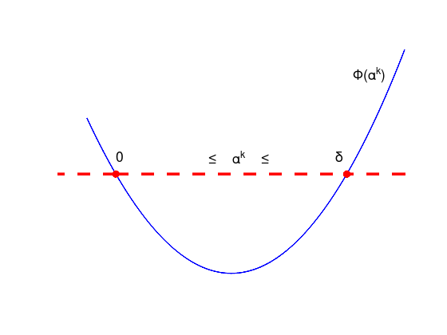
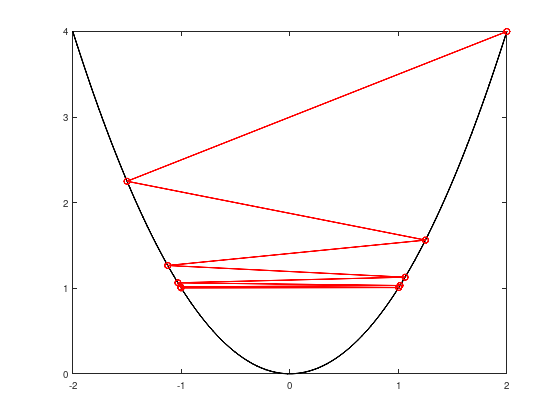
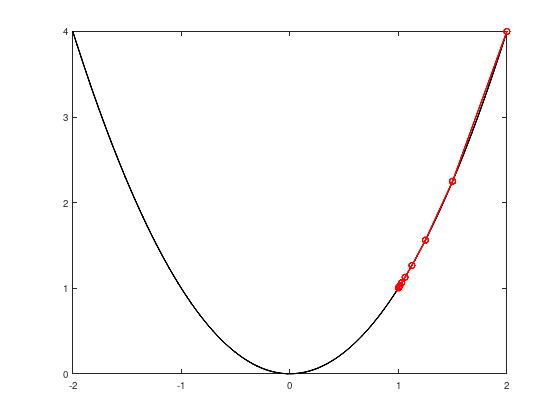
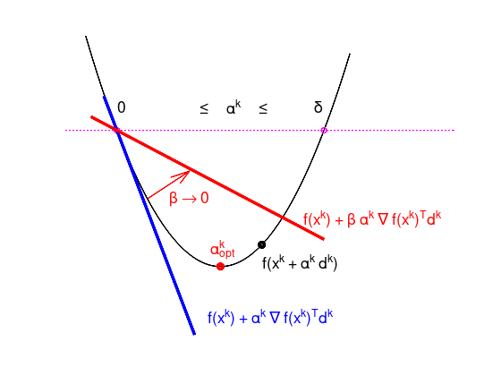
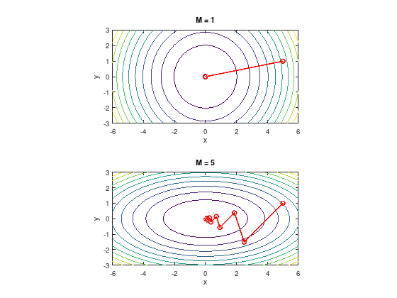
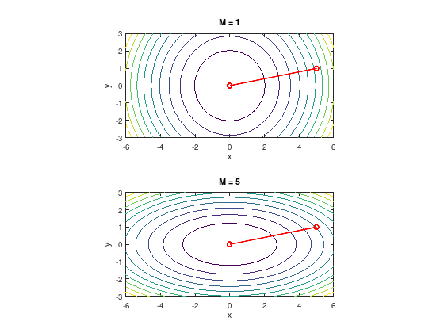

Unconstrained minimization algorithms¶
Consider the following quadratic unconstrained problem
where \(A\) is a symmetric \(n \times n\) matrix, \(x,b \in \mathbb{R}^{n}\), and \(c \in \mathbb{R}\).
\(f\) is a \(C^{\infty}\)-function with
\(f\) is convex \(\iff A \succeq 0\) (positive semi-definite).
Local minima are global for convex functions! (See Theorem 6).
\(f\) is strict convex \(\iff A \succ 0\) (positive definite).
\(A\) invertible and \(x^{*} = -A^{-1}b\) is the unique global minimum.
\(A \nsucceq 0 \implies f\) has no local minima.
Gradient methods¶
The general idea of gradient methods is to find the minimum of an optimization problem of the form
with \(x \in \mathbb{R}^{n}\) and \(f \in C^{1}(\mathbb{R}^{n},\mathbb{R})\).
Many common solution strategies try to find the minimum step-wise. From a starting point \(x^{0} \in \mathbb{R}^{n}\) in each step \(k = 0, 1, \ldots\) those strategies determine
a descent direction \(d^{k} \in \mathbb{R}^{n}\) and
a positive bounded step size \(0 < \alpha^{k} < \delta\), with \(\alpha^{k}, \delta \in \mathbb{R}\),
such that the objective function value at a new point
is smaller than the previous one \(f(x^{k + 1}) < f(x^{k})\).
A vector \(d^{k} \in \mathbb{R}^{n}\) is called descent direction in a point \(x^{k} \in \mathbb{R}^{n}\), if there exists a \(\delta > 0\) such that for all \(0 < \alpha^{k} < \delta\) the inequality
holds.
The following figure sketches \(\Phi(\alpha^{k}) = f(x^{k} + \alpha^{k} d^{k})\), that is the objective function value as function of the step size \(\alpha^{k}\) for a given descent direction \(d^{k}\) at a given point \(x^{k}\).
alpha = linspace (-0.5, 5, 100);
phi = (alpha - 2).^2 + 2;
plot (alpha, phi, 'LineWidth', 2, 'b');
hold on;
plot ([-2, 0, 4, 6], [6, 6, 6, 6], 'LineWidth', 4, 'ro--');
xlim ([-1, 5]);
ylim ([ 1, 12]);
axis off;
tprops = {'FontSize', 18};
text (0.0, 6.7, '0', tprops{:});
text (1.6, 6.7, '\leq \alpha^{k} \leq', tprops{:});
text (3.8, 6.7, '\delta', tprops{:});
text (4.1, 10, '\Phi(\alpha^{k})', tprops{:});

According to Taylor’s theorem, close to a point \(x^{k} \in \mathbb{R}^{n}\) a function \(f \in C^{1}(\mathbb{R}^{n},\mathbb{R})\) can be locally approximated by a linear function
or if \(f \in C^{2}(\mathbb{R}^{n},\mathbb{R})\) by a quadratic function
Theorem 5: Descent direction
If \(\nabla f(x^{k})^{T}d^{k} < 0\) holds, then \(d^{k}\) is a descent direction of \(f\) in the point \(x^{k}\).
Proof:
For the \(C^{1}\)-function \(\Phi(\alpha^{k}) := \tilde{f}(x^{k} + \alpha^{k} d^{k})\) there is \(\Phi'(0) = \nabla f(x^{k})^{T} d^{k}\) < 0. From this follows the assertion.
Gradient Descent¶
The most obvious choice for such a descent direction is \(d^{k} := -\nabla f(x^{k})\). This leads to the first algorithm for unconstrained minimization problems.
Note
Gradient descent or steepest descent performs the iteration:
What can go wrong?¶
Consider the function \(f(x) = x^2\), the descent directions \(d^{k} = (-1)^{k + 1}\), the step sizes \(\alpha^{k} = 2 + \frac{3}{2^{k + 1}}\) and a starting point \(x_{0} = 2\).
f = @(x) x.^2;
x = linspace (-2, 2, 100);
plot (x, f(x), 'k', 'LineWidth', 2);
hold on;
alpha = @(k) 2 + 3 / 2^(k + 1);
N = 10;
x = zeros (1, N);
x(1) = 2;
for k = 1:(N - 1)
x(k + 1) = x(k) + alpha(k - 1) * (-1)^(k);
end
plot (x, f(x), 'ro-', 'LineWidth', 2);

Step size too large: convergence against pair \(\pm 1\).
Consider the function \(f(x) = x^2\), the descent directions \(d^{k} = -1\), the step sizes \(\alpha^{k} = \frac{1}{2^{k + 1}}\) and a starting point \(x_{0} = 2\).
f = @(x) x.^2;
x = linspace (-2, 2, 100);
plot (x, f(x), 'k', 'LineWidth', 2);
hold on;
alpha = @(k) 1 / 2^(k + 1);
N = 10;
x = zeros (1, N);
x(1) = 2;
for k = 1:(N - 1)
x(k + 1) = x(k) + alpha(k - 1) * (-1);
end
plot (x, f(x), 'ro-', 'LineWidth', 2);

Step size too short.
Choosing the step size¶
From the two (admittedly constructed) examples of the previous section it becomes apparent that not any step size \(\alpha^{k}\) is suiteable for the gradient descent method or other gradient methods.
One classical method to choose the step size is the Armijo rule. This method is in general not efficient, but illustrates key ideas about other step size determination methods.
A possible Matlab/Octave implementation of the Armijo rule is given in the following listing. To improve readability, the step index \(k\) has been omitted.
The inputs of the armijo_rule function are:
a \(C^{1}\)-function \(f\),
a current iteration point \(x := x^{k}\)
with its first derivate \(\texttt{dfx} := \nabla f(x^{k})\),
and a descent direction \(d := d^{k}\).
Furthermore, three parameters are defined in the function: a start value for the step size \(\texttt{alpha} := \alpha^{k}\), \(\texttt{beta} := \beta\) with \(0 < \beta < 1\), and a shrink factor \(\texttt{tau} := \tau\) with \(0 < \tau < 1\).
function alpha = armijo_rule (f, x, dfx, d)
alpha = 1; % initial value
beta = 0.1;
tau = 0.5; % shrink factor
fx = f(x);
while (f(x + alpha * d) > fx + alpha * beta * (dfx' * d))
alpha = tau * alpha; % shrink alpha
end
end
An illustration of the algorithm is given in the following Figure.
Starting with some value for \(\alpha^{k}\), the value is shrunk by \(\tau\) until the objective function value \(f(x^{k} + \alpha^{k} d^{k})\) is below the red line, depending on \(\beta\).
This ensures a decreasing objective function value. However, a bad parameter choice might slow the convergence down.
alpha = linspace (-0.6, 4.5, 100);
phi = (alpha - 2).^2 + 2;
plot (alpha, phi, 'LineWidth', 2, 'k');
hold on;
plot ([-2, 0, 4, 9], [6, 6, 6, 6], 'LineWidth', 2, 'mo:');
alpha = linspace (-0.25, 1.5, 10);
plot (alpha, -4 * alpha + 6, 'LineWidth', 4, 'b-');
beta = 0.2;
alpha = linspace (-0.5, 4, 10);
plot (alpha, beta * -4 * alpha + 6, 'LineWidth', 4, 'r-');
plot (2, 2, 'LineWidth', 4, 'ro');
plot (2.8, 0.8^2 + 2, 'LineWidth', 4, 'ko');
xlim ([-1, 6.5]);
ylim ([ 0, 9]);
axis off;
tprops = {'FontSize', 18};
text (0.0, 6.7, '0', tprops{:});
text (1.6, 6.7, '\leq \alpha^{k} \leq', tprops{:});
text (3.8, 6.7, '\delta', tprops{:});
text (2.8, 2.1, 'f(x^{k} + \alpha^{k} d^{k})', tprops{:});
text (3.6, 3.4, 'f(x^{k}) + \beta \alpha^{k} \nabla f(x^{k})^{T}d^{k}', ...
tprops{:}, 'Color', 'red');
text (1.75, 0.5, 'f(x^{k}) + \alpha^{k} \nabla f(x^{k})^{T}d^{k}', ...
tprops{:}, 'Color', 'blue');
text (1.8, 2.5, '\alpha^{k}_{opt}', tprops{:}, 'Color', 'red');
quiver (0.6, 4, 0.8, 0.8, 'LineWidth', 2, 'r');
text (1, 4, '\beta \rightarrow 0', tprops{:}, 'Color', 'red');

In the optimization literature, depending on the given particular problem, there are better algorithms for choosing the step size available.
Example: gradient descent zig-zagging¶
Consider the quadratic unconstrained problem with the quadratic objective function
and with the respective gradient
The step sizes \(\alpha^{k}\) are determined by the Armijo rule and consider the starting point \(x_{0} = (M, 1)^{T}\) for different values of \(M\).
MM = [1, 5];
for i = 1:2
subplot (2, 1, i);
M = MM(i);
f = @(x,y) (x.^2 + M * y.^2) / 2;
[x, y] = meshgrid (linspace (-6, 6, 40), ...
linspace (-3, 3, 40));
contour (x, y, f(x,y));
hold on;
f = @(x) (x(1,:).^2 + M * x(2,:).^2) / 2;
df = @(x) [x(1); M * x(2)]; % Gradient
N = 10;
x = zeros (2, N);
x(:,1) = [5; 1];
for k = 1:(N - 1)
d = df(x(:,k));
alpha = armijo_rule (f, x(:,k), d, -d);
x(:,k + 1) = x(:,k) - alpha * d;
end
plot3 (x(1,:), x(2,:), f(x), 'ro-', 'LineWidth', 2);
axis equal;
title (['M = ', num2str(M)]);
xlabel ('x');
ylabel ('y');
end

Fast convergence, if \(M\) close to 1. The gradient “points” in the direction of the global minimum.
Slow zig-zagging, if \(M \gg 1\) or \(M \ll 1\). In each step the gradient “points away” from the global minimum.
Note: with optimal step size, the convergence behavior is similar.
Newton’s method¶
A more sophisticated choice for the descent direction \(d^{k}\) can be obtained from the quadratic Taylor approximation.
Like in the example from the introduction this is a quadratic unconstrained problem and it has a unique global minimum, if the Hessian matrix is positive definite.
Thus deriving the quadratic Taylor approximation to \(d^{k}\) and choosing without loss of generality \(\alpha^{k} = 1\), one obtains for the first order necessary condition
Finally, the descent direction \(d^{k}\) is the solution of the following linear system of equations:
Note
Newton’s method performs the iteration:
Example: Newton’s method¶
Consider again the previous quadratic unconstrained problem with the objective function \(f(x,y) = \frac{1}{2}(x^2 + M y^2)\).
The step sizes are \(\alpha^{k} = 1\) and consider the starting point \(x_{0} = (M, 1)^{T}\) for different values of \(M\).
MM = [1, 5];
for i = 1:2
subplot (2, 1, i);
M = MM(i);
f = @(x,y) (x.^2 + M * y.^2) / 2;
[x, y] = meshgrid (linspace (-6, 6, 40), ...
linspace (-3, 3, 40));
contour (x, y, f(x,y));
hold on;
f = @(x) (x(1,:).^2 + M * x(2,:).^2) / 2;
fgrad = @(x) [x(1); M * x(2)]; % Gradient
fhess = [1, 0; 0, M]; % Hessian matrix
N = 10;
x = zeros (2, N);
x(:,1) = [5; 1];
for k = 1:(N - 1)
d = fhess \ -fgrad(x(:,k));
x(:,k + 1) = x(:,k) + d;
end
plot3 (x(1,:), x(2,:), f(x), 'ro-', 'LineWidth', 2);
axis equal;
title (['M = ', num2str(M)]);
xlabel ('x');
ylabel ('y');
end

While the gradient descent method converged in the latter case zig-zagging, Newton’s method seems unaffected by the elliptic shape of the objective function and converges in one step.
This beneficial convergence behavior comes at the price of having to evaluate the Hessian matrix and solving a linear system of equations in each iteration step.
Choices of stopping criteria¶
As important as good convergence towards the minimal point, is to decide when to stop the optimization algorithm.
In literature there is a huge choice of stopping criteria, just to list a few:
\(\quad f(x^{k-1}) - f(x^{k}) \quad \leq \quad \text{TOL} (1 + \lvert f(x^{k}) \rvert )\)
\(\quad \lVert x^{k-1} - x^{k} \rVert \quad \leq \quad \text{TOL} (1 + \lVert x^{k} \rVert )\)
\(\quad \lVert \nabla f(x^{k}) \rVert \quad \leq \quad \text{TOL} (1 + \lvert f(x^{k}) \rvert )\)
\(\quad \lVert \nabla f(x^{k}) \rVert \quad \leq \quad\) machine precision
\(\quad k \quad \geq \quad k_{\max}\)
Criteria 1 to 3 monitor the progress of the algorithm, while criteria 4 and 5 can be regarded as “emergency breaks”. It is useful to implement criteria like 4 and 5 to avoid infinite loops or to stop stuck algorithm runs.
However, it often depends on the given problem which other stopping criteria are useful. For example, if the objective function is expensive to evaluate, “cheap” stopping criteria which do not cause computational overhead or are computed by the algorithms anyways might be preferable.
Further approaches¶
Other gradient methods follow in principal the form
where \(D^{k} \succ 0\) is a symmetric positive definite matrix.
For example:
Diagonally scaled steepest descent
\(D^{k}\) is a diagonal approximation to \((\nabla^{2} f(x^{k}))^{-1}\)
Modified Newton’s method
\[ D^{k} = (\nabla^{2} f(x^{0}))^{-1}, \quad k = 0, 1, \ldots \]
Discretized Newton’s method
\[ D^{k} = (H(x^{k}))^{-1}, \quad k = 0, 1, \ldots, \]where \(H(x^{k})\) is a finite difference based approximation of \(\nabla^{2} f(x^{k})\).
For example the forward- and central finite difference formulas:
\[ \frac{\partial f(x^{k})}{\partial x_{i}} \approx \frac{1}{h} \left( f(x^{k} + he_{i}) - f(x^{k}) \right), \]\[ \frac{\partial f(x^{k})}{\partial x_{i}} \approx \frac{1}{2h} \left( f(x^{k} + he_{i}) - f(x^{k} - he_{i}) \right), \]where \(e_{i}\) is the \(i\)-th unit vector and \(h\) an appropriate small quantity taller than the machine precision.
Quasi Newton Methods
Another strategy to avoid the computationally expensive evaluation of the whole Hessian matrix in each step is to update the existing Hessian matrix in the so-called Broyden–Fletcher–Goldfarb–Shanno (BFGS) algorithm:
Determine a new step \(x^{k + 1}\) from solving the Newton direction with Hessian matrix approximation \(D^{k}\). Then set \(q^{k} = x^{k + 1} - x^{k}\) and \(p^{k} = \nabla f(x^{k + 1}) - \nabla f(x^{k})\) and finally update the current Hessian matrix approximation
\[ D^{k + 1} = D^{k} + \frac{p^{k}p^{k^{T}}}{p^{k^{T}}q^{k}} - \frac{D^{k}q^{k}q^{k^{T}}D^{k}}{q^{k^{T}}D^{k}q^{k}}. \]
Summary¶
The zoo of optimization algorithms and their flavors grows steadily. It is beyond the scope of a seminar to cover them all in detail.
Gradient descent and Newton’s methods are well-studied in the optimization literature and have been presented without detailed analysis or proof of their convergence behavior.
Summarizing, typical pitfalls for gradient methods are:
Step size too long or short (“damping”, Armijo rule, etc.).
Convergence to stationary points (\(\nabla f(x) = 0\)) that are no local minima (e.g. saddle points).
Stagnation when starting at a stationary point.
Alternating sequence of iteration points.
No or slow convergence if started “too far” away from the local optimum.
In case of Newton’s method: \(\nabla^{2} f(x^{k}) \nsucc 0\), convergence unknown.